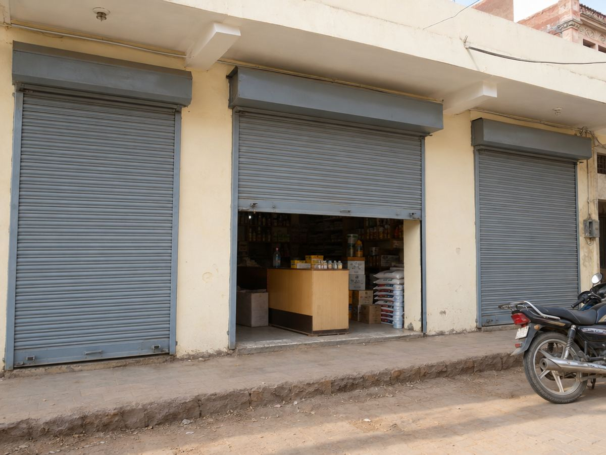
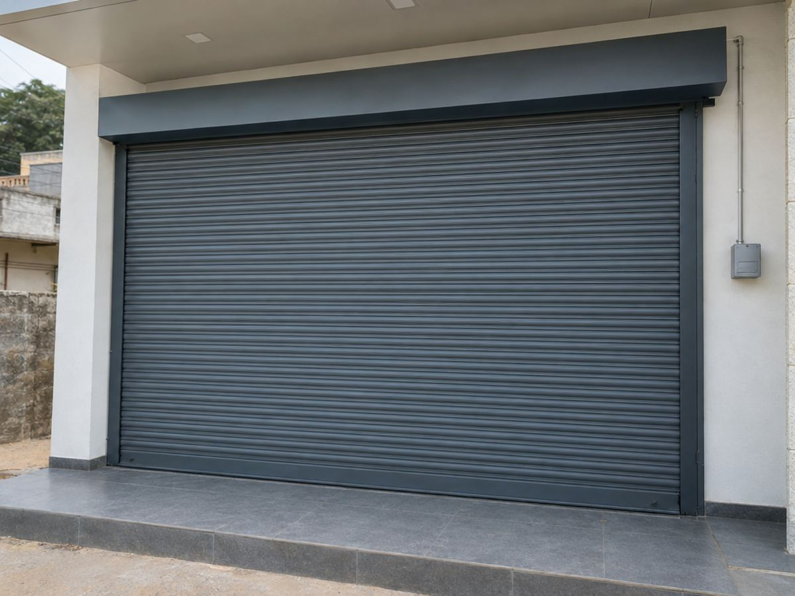
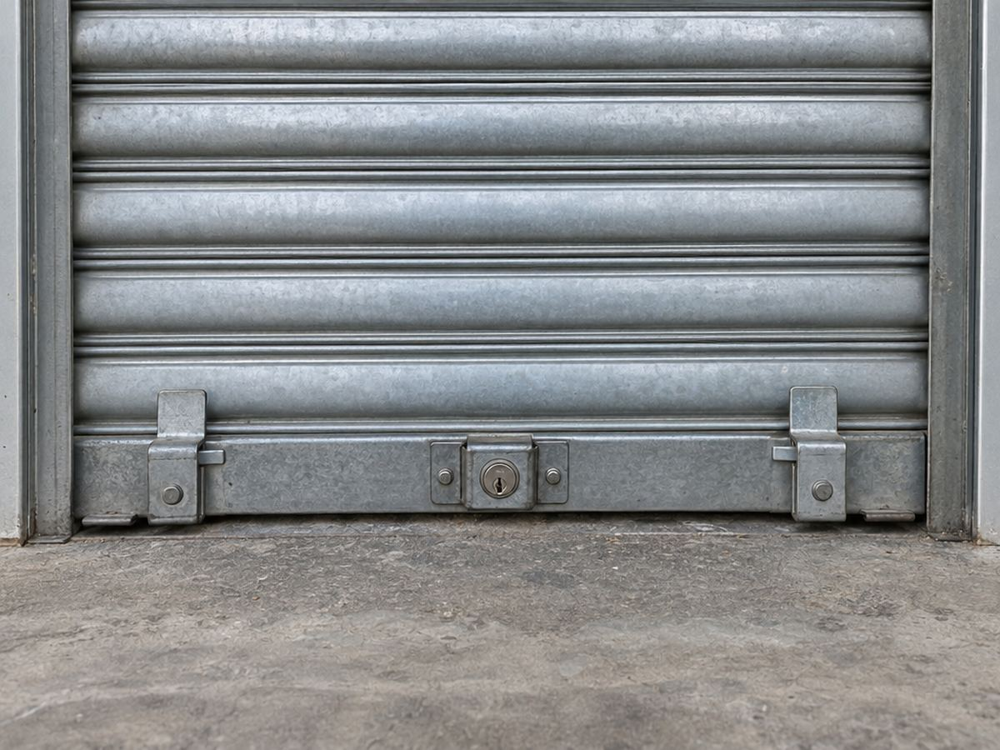

MS Rolling Shutter · Manual · Gear · Motorized
Strong shutters, made to your opening
An MS (mild steel) rolling shutter is the simplest way to lock up a shop front, godown or garage. Curved steel slats roll up into a box above the opening and run down in side channels, so it takes no floor space when open.
We make and fit new rolling shutters to your exact opening size, repair old ones that are jammed, noisy or bent, and fit motors on new or existing shutters. We work in Kotputli and nearby.
Naya shutter, purane ki repair ya motor lagwani ho — naap hum lenge, kaam poora karke denge.

Where it’s used
- Shop fronts
- Showrooms
- Godowns & warehouses
- Garages
- Factories
- Kothi & house fronts
Why a good MS shutter शटर के फ़ायदे
- 01Strong securitySteel slats, a solid bottom bar and a proper lock keep the front safe at night.
- 02Saves spaceRolls up into a box above the opening — nothing swings out or blocks the floor.
- 03Made to sizeBuilt for your exact width and height, small shop to wide godown.
- 04Manual, gear or motorPick hand-operated, gear-operated or a motorized shutter that opens with a switch.
- 05Easy to repairSlats, springs, channels and locks can be fixed or changed without a new shutter.
- 06Long life with careGalvanized or painted steel, with simple greasing, keeps running smoothly.
What we do
One team from first visit to final fitting.
- 1 · Site measurementWe visit and measure the opening, the height above it and the side space.
- 2 · MakingSlats, side channels, shaft, springs and bottom bar are made for your size.
- 3 · FittingShutter fitted, balanced and tested so it rolls up and down smoothly.
- 4 · Repair & serviceJammed, bent or noisy shutters — springs, slats, channels and locks fixed.
- Motorized shuttersMotor fitted on new or existing shutters, with a wall switch.
- Shutter partsShutter patti, side channels and locks for repair jobs.
Rolling shutter ideas
Sample designs to show what this work can look like. Ask us on WhatsApp for photos of our own completed work.



Why MD Industries
- Made to your openingEvery shutter is built to the size we measure on site.
- We come to measureSite visit before the quote, so there are no surprises.
- Repair tooNot just new shutters — we fix old ones and fit motors.
- The whole frontShutter, ACP, glass and aluminium from one place.
Shutter banwana hai ya repair karwana hai?
Call or WhatsApp us with the size or a photo of your opening — we’ll come to measure.
Visit us संपर्क करें
- AddressBehind Hotel Rawat Regency, Bansur Road, Kotputli, Rajasthan 303108
- Phone / WhatsApp+91 91667 82730
- Emailimrankhn316@gmail.com